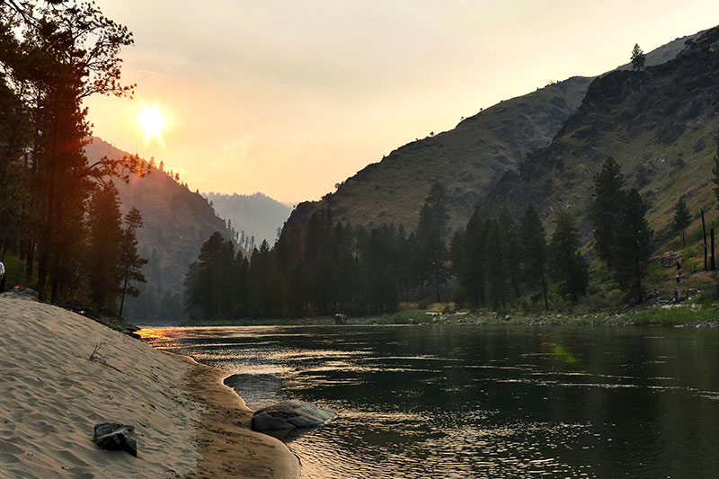

Rivers of Dry Oar
Book Now to see our riversAbout Us

Desolation and Gray Canyon, Utah
NOV 10 2021 5MIN READ
Winding through canyons in central Utah, in some of the most desolate land anywhere, the Green river flows towards the mighty Colorado river and the sea. High grey stone cliffs, beautiful desert scenery, and great rapids have made this run famous.

Main Fork of the Salmon River, Idaho
NOV 10 2021 5MIN READ
Nestled deep in the Frank Church Wilderness of No Return winds the Salmon river. The Salmon was given the nickname long ago as the River of No Return by the people living near it because of the number of folks that came to visit and fell so in love with the rugged beauty of the river that they never left.